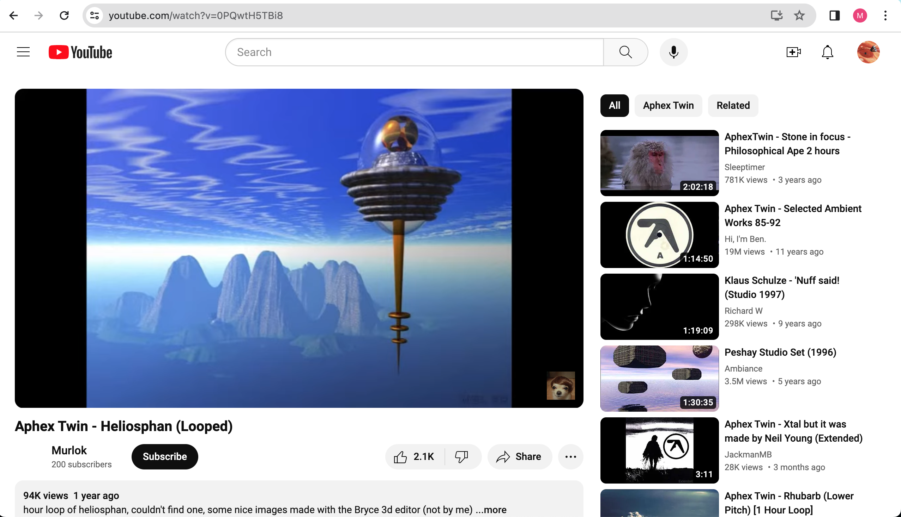
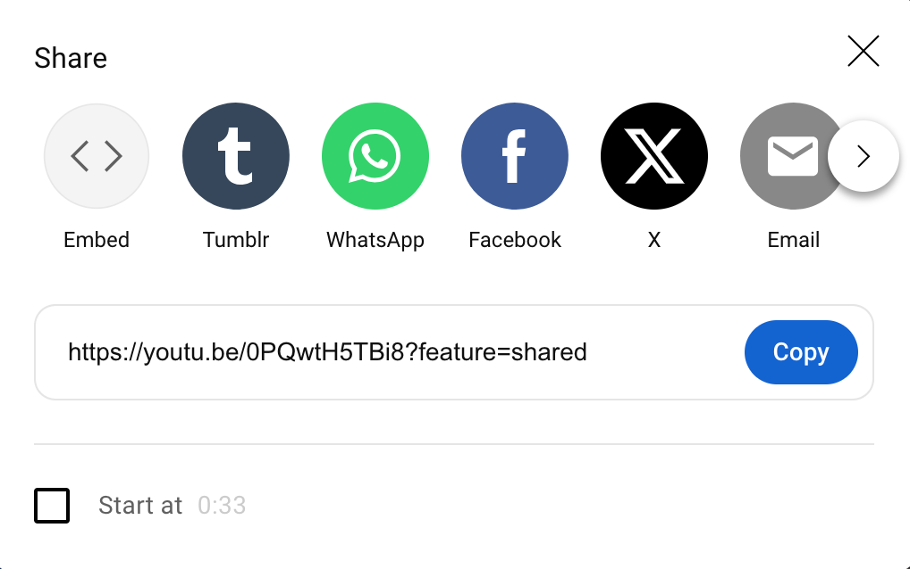
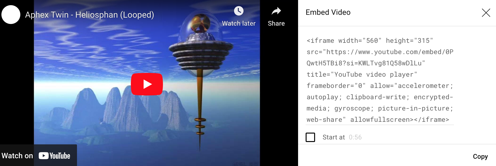

Hello! On this page I will give you a step-by-step tutorial on how to embed a video into a website.
The first step to embedding a video is to choose a video, and choose which video service to choose it from. Videos from websites like Youtube and Vimeo will generally work, and these services use a method called <iframe>, which will be touched upon later on. When you decide on a video, navigate to its page—where you watch the video itself. For this tutorial, I will use a video of a looped song that is on Youtube.
The video's page should have a "Share" button, which can be found below the video on Youtube. Click on it to display a set of options of sharing the video.
Once you click on "Share," one of the options that will be displayed is "Embed." Click on it so that the site generates the code needed for embedding the video.
Copy the code by clicking the "Copy" button or highlighting the text, double-clicking, and clicking the "Copy" option your computer displays. Paste the code into the html of the website you want to embed the video in.
Once you have completed the previous steps, the video should appear on your website wherever you placed the code for it in the <body> tag. Below you will find the video I embedded myself in this tutorial.